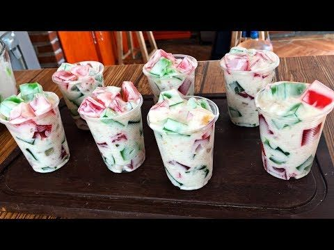
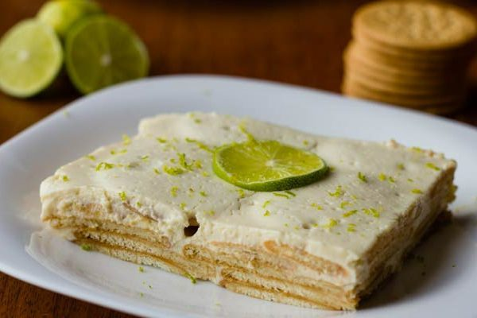
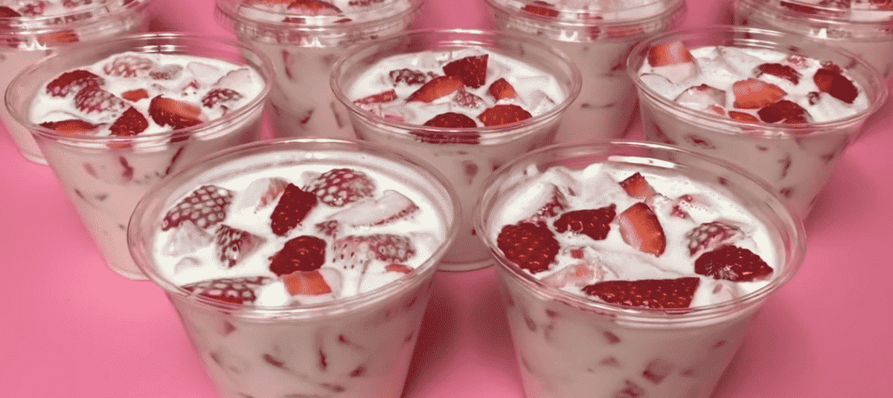
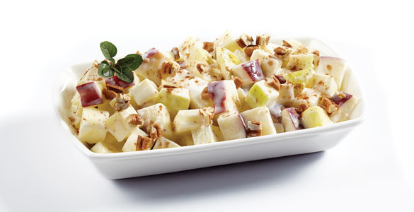
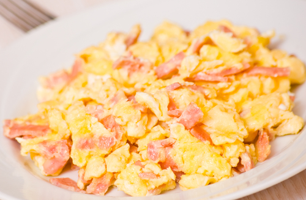
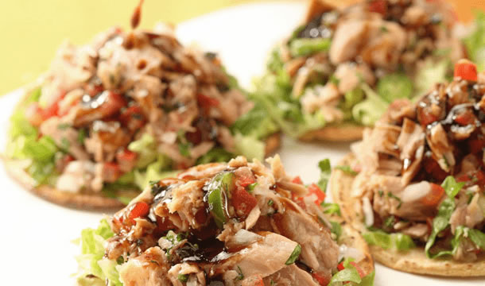
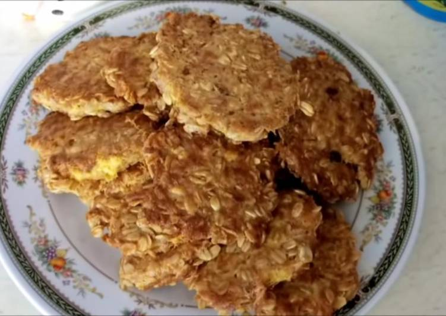
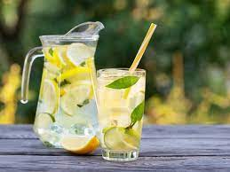
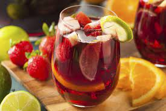
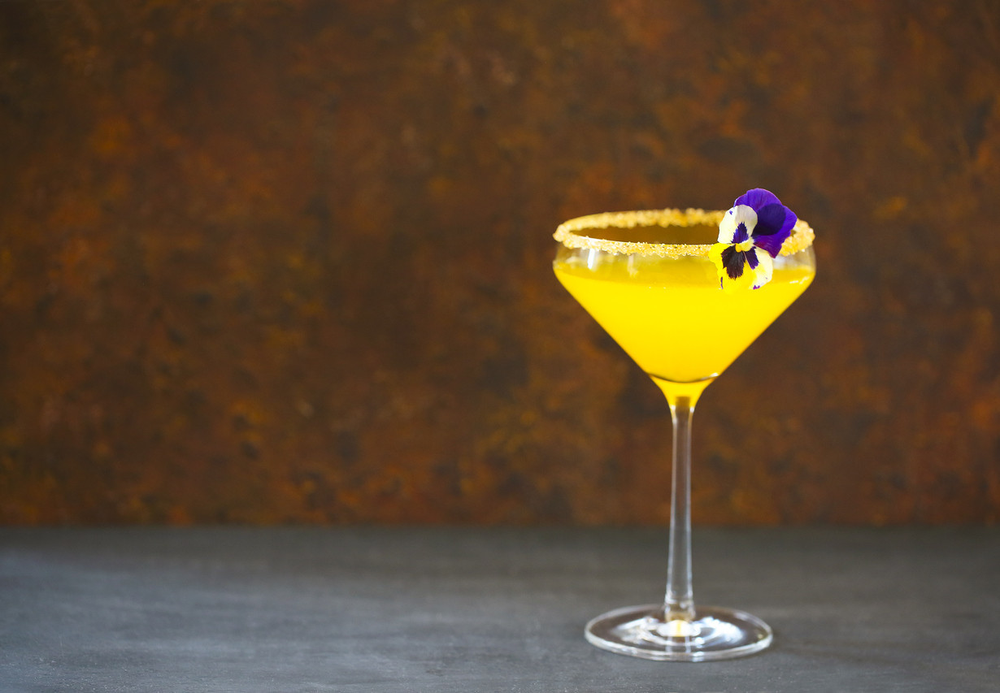

Recetario
Postres

Gelatina con Yogurt
Ingredientes:
- 1 gelatina de agua (sabor al gusto)
- 1 litro de agua
- ½ de yogurt (sabor al gusto)
Preparación:
- Hervir el agua
- Agregar el polvo de gelatina al agua hirviendo y mover hasta que se mezcle bien el polvo
- Vaciar la mezcla en un recipiente, esperar a que se enfríe y meter al refrigerador hasta que cuaje bien
- Sacar la gelatina del recipiente y picarla en cuadros medianos
- Agregar el yogurt, revolver bien y listo

Pay de limón
Ingredientes:
- 3 limones
- 1 barra de queso crema
- 1 lata de leche evaporada
- 1 lata de leche condensada
- >3 paquetes de galletas Marías
Preparación:
- Colocar la barra de queso crema, la leche evaporada y la leche condensada en una licuadora y comenzar a licuar
- Mientras se licúa verter el jugo de los limones
- En un recipiente colocar una capa de galletas
- Vaciar un poco del contenido de la licuadora en el recipiente hasta cubrir las galletas
- Repetir los pasos 3 y 4 hasta que se termine la mezcla de la licuadora
- Refrigerar por al menos 4 horas, hasta que tenga una consistencia firme y listo

Fresas con crema
Ingredientes:
- 1 kilo de fresas
- ½ litro de crema
- 1 lata de leche condensada
Preparación:
- Lavar y desinfectar bien las fresas
- Picar las fresas en cuadros pequeños
- Vaciar las fresas en un recipiente y bañarlas con la leche y la crema
- Mezclar bien y listo

Ensalada de manzana
Ingredientes:
- 1 kilo de manzanas
- ¼ de nuez picada
- 1 litro de crema
- 1 lata de leche condensada
Preparación:
- Lavar y picar las manzanas en cuadros pequeños
- Poner las manzanas en un recipiente junto con la nuez. La leche condensada y la crema
- Mezclar bien y listo
Comidas

Arroz
Ingredientes:
- 3 tazas de arroz
- >6 vasos con agua
- 200 gramos de granos de elote
- Una ramita de epazote
- 1 cubo de caldo de pollo
- Aceite
- Sal
- Pimienta
Preparación:
- Freír el arroz en aceite hasta que tome un color doradito
- Quitar el exceso de aceite y agregar el agua, el epazote, el cubo de caldo de pollo, la sal y pimienta.
- Dejar a fuego lento hasta que el agua haya sido absorbida
- Agregar los granos de elote
- Esperar a que el arroz se vuelva suave y listo.

Huevo con jamón
Ingredientes:
- ½ kilo de huevo
- Un poco de aceite
- Sal al gusto
- 100 gr de jamón
Preparación:
- 3 tazas de arroz
- 6 vasos con agua
- 200 gramos de granos de elote
- Una ramita de epazote
- 1 cubo de caldo de pollo
- Aceite
- Sal
- Pimienta

Tostadas de atún
Ingredientes:
- 2 latas de atún de agua
- 1 lata de verdura
- ½ lechuga
- Mayonessa al gusto
- Paquete de tostadas
Preparación:
- Picar y desinfectar la lechuga
- Exprimir el atún y colocar en un recipiente grande
- Agregar la lata de verdura, la lechuga y la mayonesa
- Revolver bien todos los ingredientes
- Servir en las tostadas y listo

Tortitas de aún y avena
Ingredientes:
- 2 latas de atún de agua
- 1 ½ tazas de avena
- 4 huevos
- Un poco de aceite
Preparación:
- Escurrir el atún
- En un tazón colocar el atún, la avena y los 4 huevos y revolver bien
- Una vez obtenida una masa homogénea, ir tomando un poco y hacer las tortitas
- Poner un poco de aceite en una sartén y cuando esté caliente freír las tortitas
Bebidas

Limonada
Ingredientes:
- 1 vaso de agua + 1 vaso de azúcar para hacer un almíbar ligero
- 1 vaso de zumo de limón (entre 5 y 6 limones)
- Más agua para completar 1 litro (unos 3 vasos de agua más)
- 1 limón en rodajas finas
Preparación:
- En una cazuela pequeña al fuego disolver el azúcar en el agua hasta que esté completamente disuelta sin dejar de remover
- Esperar hasta que la mezcla de un buen hervor un par de minutos
- Retirar y dejar reposar hasta que enfríe
- Cuando el almíbar se haya enfriado, poner en el fondo de una jarra grande (mínimo, 1 litro y medio)
- Seguir añadiendo el zumo de limón, el resto del agua y las rodajas de limón
- Conservar en la nevera hasta el momento de servir

Tom Collins
Ingredientes:
- 50 ml de ginebra
- 100 ml de zumo de limón
- 100 ml de soda
- 1 cucharada de azúcar
- Hielo
Preparación:
- Verter en un vaso el zumo de un limón, una cucharada de azúcar, dos medidas de ginebra y, finalmente, la soda
- Remover bien para que se diluya el azúcar
- Añadir tres o cuatro o cubitos de hielo y una rodaja de limón y a disfrutar

Clericot
Ingredientes:
- 330ml de vino blanco espumoso
- 1 melocotón
- 2 ciruelas
- 1 limón
- 5ml de crema de Cassis
- Hielo
Preparación:
- Cortar en trocitos el melocotón y las ciruelas y colocarlos en una jarra
- Agregar unas gotas de jugo de limón y la crema de Cassis
- Revolver y agregar hielo
- Verter poco a poco el vino espumoso revolviendo todo el contenido con cuidado. No queremos eliminar muchas burbujas por lo que hay que evitar revolverlo como si fuera una "cuba"
- Agregar más hielo y servir en copas de tipo flautas o en vasos cortos tipo old fashion según lo que tengamos disponible

Agua de Valencia
Ingredientes:
- Zumo de naranja
- Ginebra
- Vodka
- Champagne o cava
Preparación:
- Llenar el 33% de una jarra con zumo de naranja natural
- Agregamos un 16% de ginebra y otro 16% de vodka
- Por último, incorporar un 33% de cava o champagne
- Remover suavemente y trasladar a la nevera donde se dejará enfriar por una hora antes de servir